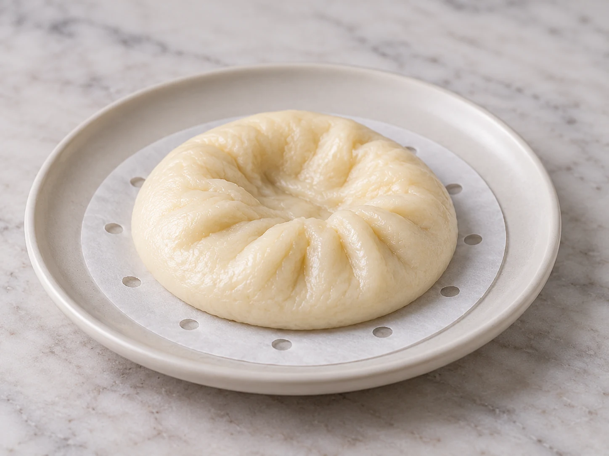

Why do bao buns collapse, shrink, or deflate after steaming?
If your bao looked plump in the steamer and then sank, shrank, or deflated, start with three clues: how far they were proofed, whether water dripped onto them, and exactly when the volume loss happened. Those clues separate the most useful next tests.

Most collapsed bao can be narrowed with three observations.
Very puffy or fragile buns before steaming point more strongly toward over-proofing. Wet spots, pits, or direct lid drips move condensation higher. If the buns hold their volume until the lid opens or they begin cooling, a post-steam structure transition remains plausible. Do not change all three at once — test the strongest clue first.
Tell Bao Rescue what you actually saw.
Collapse can look the same even when the cause is different. The diagnosis asks about proof state, visible moisture and collapse timing, then narrows the live branches instead of giving you a generic checklist.
Do not change the recipe yet.
The final symptom is not the cause. Before changing flour, yeast, steam time, proof time, and lid handling together, record what happened at the three points below.
Why do steamed buns collapse after steaming?
There is no single cause that explains every collapsed bao. The most useful first branch depends on what you observed before steaming and at the moment the bun lost volume.
1. Strong over-proof cues before steaming?
If the shaped buns were very puffy, fragile, spreading, or a finger indent failed to recover, over-proofing becomes the stronger branch. The next useful test is an earlier final-proof endpoint while keeping the dough formula and steaming setup unchanged.
2. Wet spots, pits, or direct lid drips?
Visible moisture moves condensation higher. King Arthur specifically recommends controlling lid condensation because dripping water can make steamed buns wet. If wet damage and collapse happen together, test the anti-drip setup before changing the dough.
3. Did the bao deflate only after opening the lid or during cooling?
Timing matters. If the buns hold their shape through steaming and lose volume only after the lid opens, the post-steam transition is a useful clue. It still does not prove that lid-opening alone is the cause, because weak structure from proofing can show up at the same moment.
Some reputable guidance recommends a covered rest before opening the steamer; other experienced bao sources argue correct proofing matters more and immediate opening is fine. Treat lid-rest as an A/B variable after proofing is controlled, not as a universal explanation.
Evidence: King Arthur Baking — steamed bun setup and post-steam rest; Red House Spice — over-proof collapse and conflicting lid-rest view.
Collapse, shrink, and wrinkles are related — but not identical.
If your bao mostly lost height or volume, stay on this guide. If the main problem is puckered skin, compare the steamed buns wrinkled after cooking guide. If you see obvious droplets, pits, or soggy patches, the wet bao after steaming guide is the better next branch.
Your next batch should answer one question.
If you're still deciding between over-proofing, condensation and post-steam transition, Bao Rescue will choose the branch worth testing first from the clues you provide.
Choose my next-batch test → Keep the other variables unchanged so the next batch teaches you something.Quick answers
Why did my bao buns deflate after steaming?
Start with three clues: whether the buns were very puffy or fragile before steaming, whether condensation or lid droplets were visible, and whether the volume loss happened only after the lid opened or during cooling.
Why do bao buns shrink when I open the steamer lid?
A sudden post-steam transition can be one clue, but it is not a complete diagnosis. Control proofing first, then test lid-rest as one variable if the buns consistently hold their shape until the lid is opened.
Can over-proofing make steamed buns collapse?
Yes. If the shaped buns were unusually puffy, fragile, spreading, or a finger indent failed to recover before steaming, over-proofing becomes a stronger candidate.
Can condensation make bao collapse?
Visible lid droplets, wet spots, or pits make condensation a stronger branch. Reduce direct dripping and keep the other variables unchanged to test it.
Let the diagnosis choose the branch.
Bao Rescue asks a few observable questions, ranks the live cause families, and gives one next-batch test instead of a long list of generic fixes.